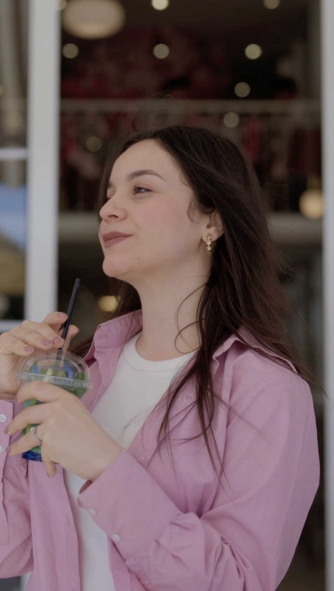

9:16 / Social film
Taste the Cold
A social-first summer world with a tactile point of view.
Temperature, colour, texture, and movement carry the story.
01 / The brief
Make the sensation
the subject.
Create a compact visual campaign that makes a cold drink feel immediate, social, and desirable.
The product does not need to be fully explained before the audience feels temperature, colour, movement, and the social energy around it.
02 / The direction
Tactile.
Direct. Alive.
A tight, high-energy frame language keeps the work immediate, balancing product detail with lifestyle moments and designing every cut for a social-first rhythm.
- 01Sensory brief
- 02Visual treatment
- 03Shoot
- 04Social rollout
03 / Deliverables
One world.
Multiple cuts.
The production delivered a hero short film, social cutdowns, lifestyle frames, and product-led imagery that keep one tactile point of view across formats.
The first gesture
LET'S MAKESOMETHING FELT.